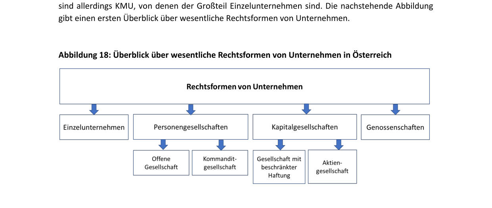
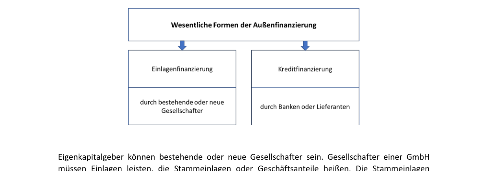
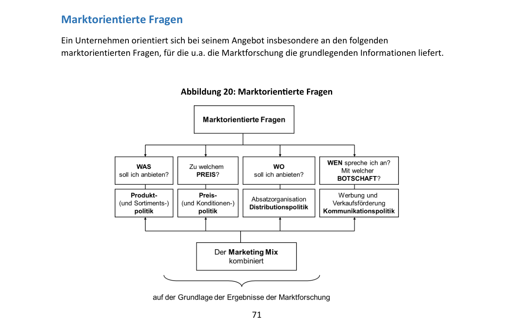
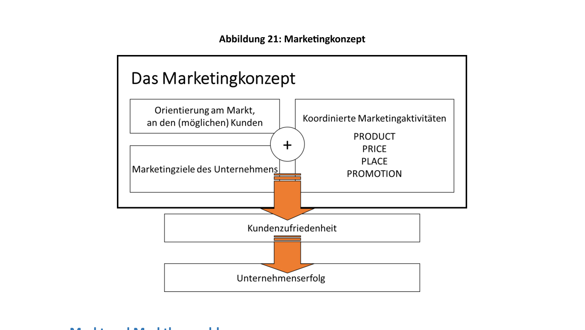
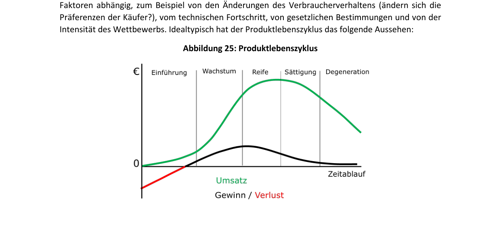
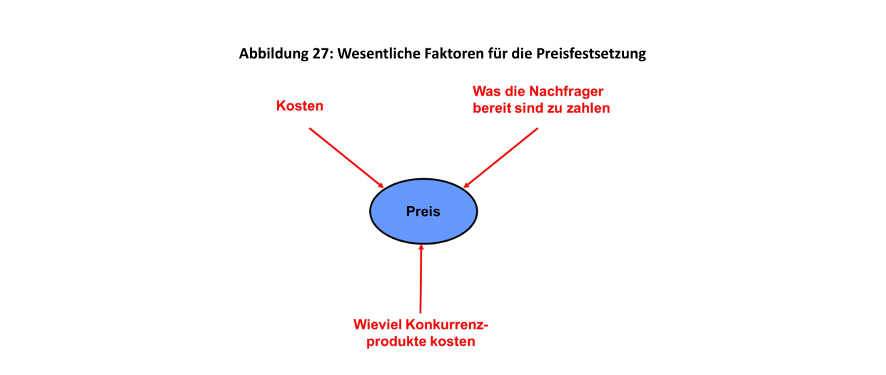
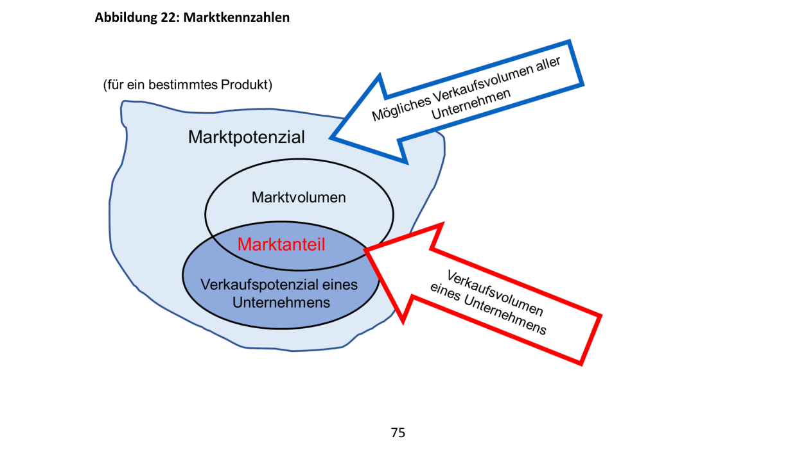
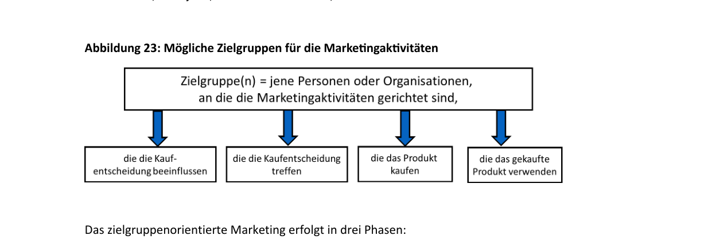
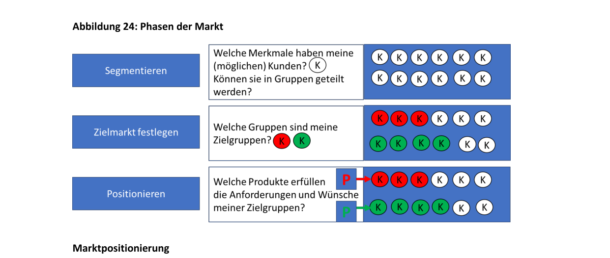

Глава 3: Что экономическая деятельность означает для предприятий (Was Wirtschaften für Unternehmen bedeutet)
Предприятия ведут экономическую деятельность в условиях, схожих с условиями частных домохозяйств. Они точно так же сталкиваются с проблемой ограниченности ресурсов и должны тщательно планировать их использование. У них нет неограниченного количества денег или средств производства. Устойчивое ведение хозяйства важно для долгосрочного существования и успеха предприятия ничуть не меньше, чем для домохозяйства.
Предприятия должны планировать свои потребности и следить за наличием финансовых средств. Их финансовые цели схожи с целями домохозяйств: обеспечение платежеспособности, формирование резервов на случай чрезвычайных ситуаций, выгодное инвестирование и привлечение финансирования на оптимальных условиях. Однако хозяйственная деятельность предприятий имеет свою специфику и в большинстве случаев является гораздо более сложной. Эти вопросы подробно изучает дисциплина «Экономика и управление предприятием» (Betriebswirtschaftslehre, BWL).
3.1 Что такое предприятие и какие виды предприятий существуют? (Was ist ein Unternehmen...)
Для создания своей продукции или услуг предприятия используют:
- Средства труда / Основные средства (Betriebsmittel): оборудование, машины, недвижимость, офисное оснащение.
- Материалы / Оборотные средства (Werkstoffe): сырье, вспомогательные материалы, покупные полуфабрикаты.
- Рабочую силу (Arbeitskräfte): трудовой вклад персонала.
- Ноу-хау и информацию (Know-how und Information).
Нанимая сотрудников, предприятия создают рабочие места. Конкурируя с другими фирмами, они разрабатывают инновации.
Предприятия влияют на различные целевые группы (Anspruchsgruppen / Stakeholder), от которых они также зависят:
- Сотрудники (Mitarbeiter:innen): заинтересованы в безопасных, интересных и хорошо оплачиваемых рабочих местах.
- Поставщики (Lieferant:innen): ожидают надежных деловых отношений и своевременной оплаты поставок.
- Клиенты (Kund:innen): желают получать качественные продукты и услуги по выгодной цене.
- Собственники / Инвесторы (Eigentümer:innen, Gesellschafter:innen, Geldgeber:innen): рассчитывают на успешное развитие компании и получение дохода на вложенный капитал.
- Местные сообщества и государство (Gemeinde, Land): заинтересованы в создании рабочих мест и уплате налогов, а также ожидают соблюдения экологических норм и социальной ответственности.
Юридическое определение предприятия в Австрии
Государство устанавливает правовые рамки для бизнеса. Законодательное определение закреплено в § 1 Предпринимательского кодекса Австрии (Unternehmensgesetzbuch, UGB):
Три основных признака предприятия с юридической точки зрения:
- Направленность на долгосрочную перспективу (auf Dauer angelegt): деятельность носит систематический, а не разовый характер.
- Самостоятельная экономическая деятельность (selbstständige wirtschaftliche Tätigkeit): осуществляется независимо и на собственный риск.
- Необязательность прибыли: даже некоммерческие организации (Non-Profit-Organisationen, NPO) могут признаваться предприятиями, если они ведут постоянную хозяйственную деятельность.
С экономической точки зрения предприятие теряет основу для существования, если оно не может работать хотя бы на уровне самоокупаемости (kostendeckend) и сохранять платежеспособность.
Добавочная стоимость (Wertschöpfung)
В процессе производства предприятия создают блага, стоимость которых превышает стоимость исходных сырья и материалов.
- Пример: Фирма производит велосипед рыночной стоимостью €500. Стоимость закупленных компонентов ( Vorleistungen) составляет €100. Созданная предприятием добавочная стоимость равна €400. Это не чистая прибыль предприятия, так как из этой суммы еще нужно оплатить труд сотрудников, амортизацию оборудования, налоги, аренду и т.д.
Добавочная стоимость лежит в основе расчета ВВП страны (как сумма добавочных стоимостей всех предприятий за вычетом промежуточного потребления).
Секторы экономики (Wirtschaftssektoren)
Предприятия классифицируются по трем основным секторам:
- Первичный сектор (primärer Sektor): Добыча сырья. Сюда относятся сельское и лесное хозяйство, рыболовство и горнодобывающая промышленность.
- Вторичный сектор (sekundärer Sektor): Переработка сырья в готовую продукцию. Включает промышленное производство (промышленность), ремесла (строительство, столярные мастерские) и энергетику.
- Третичный сектор (tertiärer Sektor): Сфера услуг. Включает торговлю, туризм, консалтинг (юридический, налоговый), банковское дело, страхование, здравоохранение, образование и транспорт.
По мере развития страны доля третичного сектора в ВВП растет. В Австрии на сферу услуг приходится около 70% ВВП. Первичный сектор, несмотря на важность для продовольственной безопасности, обеспечивает лишь немногим более 1% совокупного результата экономики.
Предприятия также группируются по отраслям (Branchen / Wirtschaftszweige) — направлениям деятельности, в которых компании производят схожие продукты или услуги (например, строительная, фармацевтическая, туристическая, медийная отрасли).
Размеры предприятий
Классификация предприятий по размеру важна для налогообложения, отчетности и получения субсидий. В ЕС используется понятие KMU (Кляйн- и Миттельунтернемен — Kleinst-, kleine und mittlere Unternehmen / SMEs):
| Категория предприятия | Число сотрудников | Выручка в год (Umsatz/Jahr) | или | Балансовая стоимость активов (Bilanzsumme) |
|---|---|---|---|---|
| Микропредприятия (Kleinstunternehmen) | до 9 | до €2 млн | до €2 млн | |
| Малые предприятия (kleine Unternehmen) | до 49 | до €10 млн | до €10 млн | |
| Средние предприятия (mittlere Unternehmen) | до 249 | до €50 млн | до €43 млн | |
| Крупные предприятия (große Unternehmen) | от 250 | более €50 млн | более €43 млн |
- Около 99% всех австрийских компаний относятся к сектору KMU.
- Около 90% из них — микропредприятия (менее 10 сотрудников).
- Примерно 85% предприятий имеют годовой оборот менее €1 млн.
- В KMU занято около 2/3 всех работающих в стране граждан.
- Остальную треть оборота создают около 1 900 крупных компаний (крупнейшие по выручке в Австрии: OMV, Porsche Holding, Strabag, REWE, Spar, voestalpine, Mondi, ÖBB, Andritz, Red Bull).
3.2 Организационно-правовые формы предприятий (Rechtsformen von Unternehmen)
Выбор организационно-правовой формы (Rechtsform) определяет, кто руководит бизнесом, кто имеет право подписи договоров, кто предоставляет капитал и в каком объеме участники отвечают по долгам компании. Информация о зарегистрированных компаниях содержится в публичном реестре — Коммерческом регистре (Firmenbuch).

1. Индивидуальное предприятие (Einzelunternehmen)
- Характеристика: Компанией управляет одно физическое лицо, которое принимает все решения и несет все риски.
- Личность и капитал: Собственник самостоятельно предоставляет весь капитал. Дополнительное финансирование обычно привлекается в виде банковских кредитов.
- Ответственность (Haftung):
В случае неудачи бизнеса предпринимателю-физическому лицу грозит процедура личного банкротства (потребительского банкротства — Privatkonkurs / Schuldenregulierungsverfahren).
2. Товарищества / Партнерства (Personengesellschaften)
Создаются при участии двух или более лиц, которые совместно вносят капитал и ведут деятельность.
- Открытое торговое товарищество (Offene Gesellschaft, OG): Все участники (партнеры) имеют право и обязанность управлять делами.
- Коммандитное товарищество (Kommanditgesellschaft, KG): Включает участников двух типов:
- Комплементарии (Komplementäre): действительные члены, несущие полную неограниченную личную ответственность и управляющие компанией (аналогично партнерам в OG).
- Коммандитисты (Kommanditisten): вкладчики, ответственность которых ограничена размером их зарегистрированного вклада в капитал (Kapitaleinlage). Они не участвуют в управлении, но имеют право контроля (проверка книг). Это позволяет привлекать партнеров с ограничением их рисков.
Товарищества обычно зависят от средств партнеров и кредитов банков, поскольку привлечение широкого круга инвесторов затруднено.
3. Хозяйственные общества / Корпорации (Kapitalgesellschaften)
Обладают статусом юридического лица (juristische Person): они могут самостоятельно заключать сделки, владеть имуществом, подавать иски и выступать ответчиками в суде. Их деятельность осуществляют органы управления, состоящие из физических лиц.
-
Общество с ограниченной ответственностью (Gesellschaft mit beschränkter Haftung, GmbH):
- Создается одним или несколькими участниками.
- Уставный капитал (Stammkapital): должен составлять не менее €10 000 (минимальный порог снижен с 1 января 2024 года, ранее составлял €35 000). Минимальный вклад одного участника (Stammeinlage) — €70. Не менее половины уставного капитала должно быть внесено деньгами, остальное допускается внести имуществом (Sacheinlage: компьютеры, авто).
- Управление: осуществляется одним или несколькими директорами (Geschäftsführer:innen), которые могут и не быть владельцами долей. Собственники получают доходы в виде распределяемой прибыли (Gewinnanteile / Dividenden) пропорционально своим долям и не отвечают по долгам GmbH своим личным имуществом (рискуют только внесенным вкладом).
-
Гибкое капитальное общество (Flexible Kapitalgesellschaft, FlexKapG):
- Новая форма корпорации (введена в Австрии недавно), близкая к GmbH. Минимальный уставный капитал также составляет €10 000, но минимальный вклад участника снижен до €1.
- Позволяет выпускать доли стоимости предприятия (Unternehmenswert-Anteile) — специальный вид долей без права голоса на общем собрании, упрощающий участие сотрудников в прибыли компании.
-
Акционерное общество (Aktiengesellschaft, AG):
- Уставный капитал (Grundkapital): должен составлять не менее €70 000 и разделен на акции (Aktien). Владельцы акций называются акционерами (Aktionäre).
- Ответственность: акционеры не отвечают по обязательствам AG своим имуществом, они рискуют только деньгами, потраченными на покупку акций.
- Органы управления:
- Правление (Vorstand): ведет текущие дела под свою ответственность и представляет общество вовне.
- Наблюдательный совет (Aufsichtsrat): назначает членов правления и контролирует их деятельность.
- Общее собрание акционеров (Hauptversammlung).
-
Европейское акционерное общество (Societas Europaea, SE):
- Разновидность акционерного общества, действующая на единых правовых основаниях на всей территории ЕС/ЕЭЗ. Удобна для компаний с филиалами в разных странах ЕС (например, концерн Strabag). Минимальный капитал составляет €120 000.
4. Кооперативы (Genossenschaften)
- Цель: Объединение не менее двух физических или юридических лиц для содействия доходам или хозяйственной деятельности своих членов (Förderung des Erwerbs und der Wirtschaft der Mitglieder), а не получение прибыли для самой организации.
- Примеры деятельности: совместное использование оборудования, совместные закупки сырья или совместный сбыт продукции.
- Форма в Австрии: «зарегистрированный кооператив» (eingetragene Genossenschaft, e. Gen.). На европейском уровне действует аналог — Societas Cooperativa Europaea (SCE).
- Управление и особенности:
- Вход новых членов и выход из кооператива максимально упрощены. Минимальный капитал законом не установлен. Члены вносят паевые взносы (Kapitaleinlage).
- Ответственность участников обычно ограничена размером пая или его кратной величиной (часто в двойном размере пая).
- Органы управления: Правление (Vorstand) и Общее собрание участников (Hauptversammlung).
- Кооперативный принцип голосования (Kopfstimmrecht): на собрании каждый член имеет ровно один голос, независимо от размера его паевого взноса (в отличие от AG или GmbH, где сила голоса пропорциональна капиталу).
Коммерческий регистр (Firmenbuch)
Это центральная публичная база данных, ведение которой осуществляется судами.
- Регистрация обязательна для товариществ (OG, KG), корпораций (GmbH, AG) и кооперативов.
- Индивидуальные предприниматели (Einzelunternehmen) обязаны регистрироваться только при превышении объема выручки в €700 000 в год за два года подряд (или более €1 млн за один год). Ниже этого порога регистрация является добровольной.
- В регистре содержатся сведения о юридическом названии компании (наименование фирмы — Firma), месте нахождения (юридический адрес), целях деятельности, именах собственников/партнеров (кроме акционеров AG), размере вкладов в капитал и лицах, обладающих правом подписи и руководства (уполномоченных представлять компанию).
Таблица 2: Сводная характеристика организационно-правовых форм (Zusammenfassende Darstellung der Merkmale der verschiedenen Rechtsformen)
| Признак | Индивидуальное предприятие (Einzelunternehmen) | Открытое товарищество (Offene Gesellschaft - OG) | Коммандитное товарищество (Kommanditgesellschaft - KG) | Общество с огр. ответственностью (GmbH) | Акционерное общество (AG) / SE | Кооператив (Genossenschaft - e.Gen.) |
|---|---|---|---|---|---|---|
| Кто управляет / ведет дела? | Индивидуальный предприниматель | Все участники товарищества (минимум двое) | Комплементарии (действительные члены, минимум один) | Директоры (Geschäftsführer, минимум один) | Правление (Vorstand) | Правление (Vorstand) |
| Кто является участником? | Индивидуальный предприниматель | Участники OG (минимум двое) | Комплементарии (мин. один) и коммандитисты (вкладчики, мин. один) | Все учредители / владельцы долей, внесшие вклады | Акционеры, купившие хотя бы одну акцию | Члены кооператива |
| Кто предоставляет капитал? | Индивидуальный предприниматель | Участники OG | Комплементарий может внести, коммандитист обязан внести вклад | Участники GmbH | Акционеры путем покупки акций | Члены кооператива путем паевых взносов |
| Есть ли минимальный капитал? | Нет | Нет | Нет | Да, €10 000 (с 2024 года, FlexKapG также €10 000) | Да, €70 000 (для SE: €120 000) | Нет |
| Кто отвечает по долгам предприятия? | Лично предприниматель — неограниченно всем имуществом | Все участники лично, неограниченно и солидарно | Комплементарии лично и неограниченно; коммандитисты — только в пределах вклада | Никто лично; риски ограничены уставным вкладом в GmbH | Никто лично; риски ограничены стоимостью купленных акций | Члены кооператива своим паем (как правило, в двойном размере) |
| Как привлечь доп. (собственный) капитал? | Внесение средств самим владельцем | Вклады действующих участников | Увеличение вкладов или привлечение новых коммандитистов | Увеличение вкладов или прием новых участников | Выпуск (эмиссия) новых акций на фондовом рынке | Прием новых членов кооператива |
3.3 Как предприятия привлекают финансовые средства (Wie Unternehmen finanzielle Mittel aufbringen)
Финансирование необходимо компаниям как на этапе создания, так и в процессе текущей деятельности.
- Долгосрочная потребность в капитале: Инвестиции (Investitionen) в основные фонды (здания, оборудование, автопарк, IT-инфраструктура).
- Краткосрочная потребность в капитале: Текущие расходы (оборотный капитал) на закупку сырья и материалов, выплату заработной платы, оплату аренды и энергии до момента получения выручки от продаж.

Собственный и заемный капитал (Eigen- und Fremdfinanzierung)
-
Собственный капитал (Eigenkapital): Капитал, предоставляемый учредителями (Eigentümer) или акционерами, включая деньги и имущественные вклады (Sacheinlagen).
- Свойства: Не подлежит обязательному возврату, находится в распоряжении компании неограниченно долго. Не требует обязательной выплаты процентов (доход выплачивается в виде дивидендов только при наличии прибыли). Наличие высокого собственного капитала укрепляет финансовую устойчивость компании.
-
Заемный капитал (Fremdkapital): Средства, привлекаемые от третьих лиц (банков, поставщиков).
- Свойства: Предоставляется на определенный срок и подлежит возврату. Требует обязательной уплаты процентов (Zinszahlungen), независимо от финансовых результатов компании. Кредиты (Kredite) — основная форма заемного капитала.
Таблица 3: Сравнение характеристик собственного и заемного капитала (Merkmale von Eigen- und Fremdkapital)
| Критерий сравнения | Собственный капитал (Eigenkapital) | Заемный капитал (Fremdkapital) |
|---|---|---|
| На какой срок предоставляется? | Долгосрочно, как правило, бессрочно (не подлежит возврату) | Краткосрочно или долгосрочно, строго на согласованный срок |
| Какова плата за капитал? | При наличии прибыли — дивиденды (выплата не гарантирована) | Обязательная уплата процентов (Zinsen), сам капитал подлежит возврату |
| Есть ли право голоса / участия в управлении? | Да, в разной степени в зависимости от правовой формы | Нет, кредиторы не имеют права вмешиваться в управление компанией |
| Есть ли обеспечение возврата средств? | Нет, риски полностью лежат на собственниках | Да, если предоставлен залог или иное обеспечение (залог имущества, поручительство) |
Краткосрочное финансирование за счет поставщиков
Важным источником заемного капитала в текущей деятельности являются поставщики при продаже товаров «под расчет» / в кредит (покупка в рассрочку — «auf Ziel»).
- Обязательства по поставкам и услугам (Lieferverbindlichkeiten): возникают, когда поставщик предоставляет отсрочку платежа (например, 30 дней).
- Сконто (Skonto): скидка, предоставляемая за быструю оплату счета (например, скидка 2% при оплате в течение 7 дней вместо 30). Отказ от сконто ради использования полного срока отсрочки фактически означает привлечение дорогого кредита от поставщика под очень высокий эффективный процент. Часто в такой ситуации выгоднее взять краткосрочный кредит в банке (овердрафт по счету) для оплаты счета со скидкой сконто.
Внутреннее и внешнее финансирование (Innen- und Außenfinanzierung)
1. Внутреннее финансирование (Innenfinanzierung)
Источником средств является выручка от продаж самого предприятия.
-
Самофинансирование (Selbstfinanzierung): Удержание и реинвестирование полученной прибыли ( Einbehalten von Gewinnen). Это увеличивает собственный капитал предприятия и делает его более устойчивым к кризисам:
- Снижается зависимость от банков.
- Отсутствуют процентные расходы.
- Накопленный капитал позволяет покрывать возможные убытки прошлых лет без риска банкротства.
-
Финансирование за счет амортизационных отчислений (Abschreibungsfinanzierung):
- Финансирование за счет оценочных обязательств / резервов (Rückstellungsfinanzierung):
2. Внешнее финансирование (Außenfinanzierung)
Капитал поступает в компанию из внешних источников.
-
Долевое внешнее финансирование: Вклады собственников (Einlagenfinanzierung). В GmbH это дополнительные вклады учредителей. В AG — выпуск новых акций (эмиссия акций — Emission).
- Акция: ценная бумага (Wertpapier), подтверждающая долю инвестора в уставном капитале AG и дающая право на получение части прибыли (дивидендов) и участие в голосовании. Цена акции на рынке называется ее курсом (Kurs). При увеличении капитала (капиталоувеличении — Kapitalerhöhung) действующие акционеры получают преимущественное право на покупку новых акций (право подписки — Bezugsrecht), чтобы сохранить свою долю участия.
-
Заемное внешнее финансирование: Кредиты банков или выпуск облигаций.
- Облигации (Anleihen / Schuldverschreibungen / Renten / Bonds):
Большие суммы сложно получить в виде одного кредита в банке, поэтому крупный заем (номинал облигации — Anleihenominale) дробится на мелкие доли (номинал одной бумаги / номинал выпуска — Stückelung), которые распродаются множеству инвесторов на фондовом рынке. Цена облигации на бирже называется ее курсом. В конце срока облигация погашается (tilgen) по номинальной стоимости. Процент по облигации может быть фиксированным или плавающим (например, привязанным к ставке Euribor). Облигации с плавающей ставкой называют флоатерами (Floater).
3.4 На какие вопросы отвечает бухгалтерский учет и отчетность (Welche Fragen das Rechnungswesen beantwortet)
Бухгалтерский учет (Rechnungswesen) отражает все хозяйственные операции компании. Основные направления представлены в таблице:
| Вопрос | Направление бухгалтерского учета | Содержание |
|---|---|---|
| Достаточно ли у компании денег для текущих платежей, есть ли дефицит средств? | Финансовый учет / Финансовое планирование (Finanzrechnung) | Финансовые планы (бюджеты), расчет денежных потоков (Cashflow). |
| Каким имуществом владеет компания и как оно профинансировано? Получена ли прибыль или убыток за период? | Бухгалтерский учет (Buchhaltung / externes Rechnungswesen) | Составление Баланса (Bilanz) и Отчета о финансовых результатах (Gewinn- und Verlustrechnung, G&V). |
| Сколько стоит производство единицы продукции? Каков вклад каждого продукта в покрытие постоянных затрат? | Учет затрат / Калькуляция (Kostenrechnung / internes Rechnungswesen) | Расчет себестоимости продукции, маржинальный анализ (Deckungsbeitragsrechnung). |
1. Финансовый учет (Finanzrechnung)
Обеспечивает контроль за платежеспособностью (ликвидностью — Liquidität) компании. Фирма должна быть способна своевременно оплачивать все счета. Потеря платежеспособности ведет к банкротству (Insolvenz).
Для контроля ликвидности составляется Финансовый план / Бюджет (Finanzplan / Budget):
- Сопоставляются запланированные поступления денежных средств (Einzahlungen, EZ) и выплаты денежных средств (Auszahlungen, AZ) за определенный период (например, за месяц).
- Разница между поступлениями и выплатами:
- Притоки (EZ) > Вытоков (AZ): положительный результат, компания сохраняет ликвидность. Избыток средств можно выгодно инвестировать.
- Вытоки (AZ) > Притоков (EZ): возникает дефицит средств. Требуются срочные меры (сокращение расходов, отсрочка платежей поставщикам, сокращение запасов, привлечение кредита овердрафт или взносов от собственников).
Разница между поступлениями и выплатами за период формирует денежный поток (Cashflow). Положительный Cashflow свидетельствует о способности компании генерировать средства для развития и возврата долгов.
2. Бухгалтерский учет (Buchhaltung)
Каждое предприятие обязано вести учет операций для определения финансового результата и расчета налогов. Бухгалтерский учет называют внешним (externes Rechnungswesen), так как он предоставляет информацию внешним пользователям: налоговой службе, банкам, инвесторам (акционерам), поставщикам и сотрудникам.
В зависимости от формы и размера бизнеса отчетность ведется в виде:
- Учета доходов и расходов (Einnahmen-Ausgaben-Rechnung, EAR): простая форма учета по кассовому методу. Разрешена для индивидуальных предпринимателей и товариществ с годовым оборотом менее €700 000.
- Двойной бухгалтерии (doppelte Buchhaltung): сложная система учета методом начисления. Обязательна для всех корпораций (GmbH, AG), а также для ИП и товариществ, превысивших лимит оборота в €700 000. Включает составление Баланса (Bilanz) и Отчета о финансовых результатах (Gewinn- und Verlustrechnung, G&V). Крупные компании обязаны публиковать отчетность в Коммерческом регистре.
Баланс (Die Bilanz)
Баланс отражает состояние активов и капитала компании на определенный момент времени (обычно на 31 декабря).
- Актив (Aktiva / Vermögen): левая сторона баланса. Показывает, во что вложены средства (использование средств — Mittelverwendung). Называется дебетовой стороной (Sollseite).
- Пассив (Passiva / Kapital): правая сторона баланса. Показывает, откуда привлечены средства (источники финансирования — Mittelherkunft). Называется кредитовой стороной (Habenseite).
АКТИВ (Aktiva / Vermögen) ПАССИВ (Passiva / Kapital)
[Использование средств (Soll / Wofür)] [Источники средств (Haben / Woher)]
+---------------------------------------+ +------------------------------------+
| А. Внеоборотные активы | | А. Собственный капитал |
| (Anlagevermögen: здания, станки) | | (Eigenkapital: вклады, прибыль) |
| | | |
| Б. Оборотные активы | | Б. Заемный капитал |
| (Umlaufvermögen: запасы, деньги) | | (Fremdkapital: кредиты, долги) |
+---------------------------------------+ +------------------------------------+
| Баланс (Итого активов) | = | Баланс (Итого пассивов) |
+---------------------------------------+ +------------------------------------+
- Внеоборотные активы (Anlagevermögen): имущество, предназначенное для долгосрочного использования на предприятии (более 1 года). Сюда входят недвижимость (земельные участки, здания), машины и оборудование, лицензии, патенты, а также долгосрочные финансовые вложения.
- Оборотные активы (Umlaufvermögen): активы, которые находятся на предприятии временно (менее 1 года) и постоянно меняют свою форму. Сюда входят запасы сырья и готовой продукции (Vorräte), дебиторская задолженность покупателей (Forderungen aus Lieferungen und Leistungen), остатки на банковских счетах и наличные деньги в кассе (Bankguthaben und Barbestand).
- Собственный капитал (Eigenkapital): чистые активы владельцев. Рассчитывается как разница между совокупными активами и обязательствами (заемным капиталом). Рост собственного капитала за год отражает полученную прибыль, снижение — убыток (принцип двойного определения прибыли).
- Заемный капитал (Fremdkapital): обязательства компании перед третьими лицами (кредиты банков, резервы под обязательства, задолженность перед поставщиками).
- Золотое правило баланса (goldene Bilanzregel):
Отчет о финансовых результатах (Gewinn- und Verlustrechnung, G&V)
Отражает доходы и расходы компании за отчетный период (обычно за год). Расходы вычитаются из выручки от продаж (Umsatzerlöse).
- Расходы включают: затраты на материалы (Materialaufwand), оплату труда персонала (Personalaufwand), амортизацию активов (Abschreibungen), аренду, проценты по кредитам, налоги.
- EBIT (Earnings Before Interest and Taxes): операционный результат компании (Ergebnis vor Zinsen und Steuern) до вычета процентов по кредитам и налогов.
- Финансовый результат (Finanzergebnis): разница между финансовыми доходами (проценты по вкладам) и расходами (проценты по кредитам).
- Чистая прибыль (Jahresergebnis / Gewinn): итоговый финансовый результат после уплаты всех расходов, процентов и налогов.
Отчет о движении денежных средств (Cashflowrechnung)
Дополняет Баланс и G&V, показывая реальные изменения денежных средств. Отчет разбит на три раздела:
- Денежный поток от операционной деятельности (Cashflow aus der Betriebstätigkeit / Operating Cashflow): Движение средств по основной деятельности компании. Показывает, зарабатывает ли бизнес деньги на своем продукте. Ключевой показатель для инвесторов.
- Денежный поток от инвестиционной деятельности (Cashflow aus der Investitionstätigkeit / Investing Cashflow): Затраты на приобретение оборудования, недвижимости или доходы от их продажи. Обычно этот показатель отрицательный у растущих компаний.
- Денежный поток от финансовой деятельности (Cashflow aus der Finanzierungstätigkeit / Financing Cashflow): Привлечение акционерного капитала, получение или возврат кредитов, выплата дивидендов.
3. Учет затрат (Kostenrechnung / internes Rechnungswesen)
Используется внутри компании для управленческих решений (расчет себестоимости единицы товара, ценообразование, контроль эффективности подразделений). Ведение учета затрат не требуется по закону, но необходимо для управления бизнесом.
Затраты (Kosten) представляют собой оцененное в денежной форме потребление ресурсов для достижения целей компании.
- Отличие затрат от расходов: Учет затрат включает вмененные издержки (kalkulatorische Kosten), которые отсутствуют в обычной бухгалтерии. Например, вмененный доход предпринимателя (kalkulatorischer Unternehmerlohn) — гипотетическая зарплата индивидуального предпринимателя или партнеров в OG, которую они могли бы получать, работая по найму в другом месте (альтернативные издержки их труда).
Классификация затрат
- Постоянные затраты (fixe Kosten): Не зависят от объема производства (аренда цеха, зарплата руководства, страховка, линейная амортизация оборудования).
- Переменные затраты (variable Kosten): Растут или снижаются пропорционально объему выпуска продукции (сырье, материалы, детали для сборки велосипеда).
Маржинальный анализ и точка безубыточности
Для анализа покрытия затрат используется маржинальный доход / вклад на покрытие (Deckungsbeitrag, DB):
Маржинальный доход показывает, сколько средств от продажи одной единицы товара идет на покрытие постоянных затрат компании и формирование прибыли.
-
Доля маржинального дохода / коэффициент покрытия (Deckungsquote): отношение маржинального дохода к цене продажи (в процентах).
$$\text{Deckungsquote (\%)} = \frac{\text{Deckungsbeitrag (DB)}}{\text{Preis}} \times 100$$
Формула расчета выручки в точке безубыточности (Break-even Umsatz):
-
Пример: Фирма выпускает велосипеды ценой €400. Переменные затраты на один велосипед равны €180.
-
Маржинальный доход (DB) на единицу товара:
$$\text{Deckungsbeitrag (DB)} = 400 - 180 = \text{€}220$$ -
Коэффициент покрытия (Deckungsquote):
$$\text{Deckungsquote} = \frac{220}{400} \times 100 = 55\%$$ -
Если постоянные затраты фирмы составляют €4 млн, то для достижения точки безубыточности требуется оборот:
$$\text{Break-even Umsatz} = \frac{4\,000\,000}{55} \times 100 \approx \text{€}7\,272\,727$$Для покрытия всех затрат компания должна сделать оборот не менее €7,3 млн.
-
3.5 Маркетинг — нет успеха без ориентации на рынок (Marketing — kein Erfolg ohne Marktorientierung)
Ориентация на рынок имеет решающее значение. Выпуск продукции, которая не находит спроса («производство мимо рынка»), ведет к убыткам и банкротству.
Задачи маркетинга:
- Выявить текущие и будущие потребности покупателей.
- Спланировать соответствующее предложение компании.
- Донести информацию о ценности предложения до клиентов (коммуникация).
- Установить цену, которую клиенты готовы и могут заплатить.
- Организовать доставку товара в нужное место и в нужное время (распределение).

Эти четыре направления составляют Маркетинг-микс (Marketing Mix / 4 Ps).

Элементы Маркетинг-микса (4 Ps)
Маркетинг-микс (4 Ps)
|
+------------------+--------------+------------------+
| | | |
Продукт Цена Сбыт Коммуникации
(Product) (Price) (Place) (Promotion)
1. Товарная политика (Produktpolitik / PRODUCT)
Определяет ассортимент товаров (Produktprogramm / Sortiment), дизайн продуктов, упаковку, бренд и послепродажное обслуживание.
- В маркетинге под «продуктом» понимаются не только физические товары (велосипед, пакет сахара), но и услуги (фитнес-клуб, консалтинг), идеи, организации, бренды, персоны и даже регионы или страны.
Таблица 6: Основная и дополнительная полезность продукта (Grund- und Zusatznutzen eines Produkts)
| Вид полезности (Nutzen) | Сущность | Пример (на примере велосипеда) |
|---|---|---|
| Основная полезность (Grundnutzen) | Первичная цель / базовое функциональное назначение продукта | Езда, перемещение из точки А в точку Б |
| Дополнительная полезность (Zusatznutzen) | Дополнительная ценность, выходящая за рамки базовых функций | |
| * Эстетическая/эмоциональная полезность (Erlebnisnutzen) | Удовольствие, радость от использования продукта, чувство безопасности | Приятные ощущения от езды, уверенность в надежности и безопасности велосипеда |
| * Социальная полезность (Geltungsnutzen) | Престиж, статус, признание со стороны окружающих | Престиж владения известным и дорогим брендом (например, велосипедом woom) |
Жизненный цикл продукта (Produktlebenszyklus)
Большинство товаров проходят на рынке определенные стадии развития:
- Этап внедрения (Einführungsphase): Выпуск нового товара. Продажи растут медленно из-за слабой осведомленности клиентов. Высокие затраты на продвижение и разработку ведут к тому, что прибыль появляется только к концу этапа. При неудаче продукт уходит с рынка.
- Этап роста (Wachstumsphase): Быстрый рост продаж и прибыли. Продуктом начинают интересоваться конкуренты, появляются первые аналоги. Важна ценовая политика для удержания доли.
- Этап зрелости (Reifephase): Объем продаж достигает максимума. Однако прибыль начинает снижаться из-за обострения конкуренции и роста затрат на рекламу, скидки и акции.
- Этап насыщения (Sättigungsphase): Продажи и прибыль падают. Рынок сжимается. Компания должна принять решение: перезапустить продукт с изменениями (релонч — Relaunch) или вывести его из ассортимента.
- Этап спада / дегенерации (Degenerationsphase): Продукт приносится в жертву из-за чрезмерных затрат и падения спроса.

Меры товарной политики
- Инновация продукта (Produktinnovation): разработка нового товара. Может вести к углублению ассортимента (дифференциация — Produktdifferenzierung, например, выпуск новых моделей велосипедов) или его расширению (диверсификация — Produktdiversifikation, например, woom начинает выпускать спортивную одежду или шлемы).
- Модификация продукта (Produktvariation): изменение характеристик существующего товара (старая версия при этом снимается с производства).
- Элиминация продукта (Produktelimination): снятие устаревшего или нерентабельного товара с производства.
2. Ценовая политика (Preispolitik / PRICE)
Определяет уровень цен, систему скидок, условия оплаты и доставки. Цена должна покрывать затраты предприятия и соответствовать ценности продукта в глазах покупателя.

-
Факторы ценообразования (три кита ценообразования):
- Затраты (Kosten): нижняя граница цены (себестоимость).
- Цены конкурентов (Preise der Konkurrenz): ориентир на рынке.
- Готовность клиентов платить (Запрашиваемый объем спроса): верхняя граница цены.
-
Различают политику высоких цен (высокое качество, сильный бренд, USP) и политику низких цен / дисконтную политику.
- Нерациональное поведение покупателей:
- Эффект сноба (Snob-Effekt): покупка дорогого товара с целью демонстрации своего превосходства и статуса.
- Эффект присоединения к большинству (Mitläufer-Effekt): покупка товара вслед за другими («эффект толпы»).
- Эффект качества (Qualitätseffekt): подсознательная оценка дорогого товара как более качественного по сравнению с дешевым.
3. Сбытовая политика (Distributionspolitik / PLACE)
Определяет пути движения товара от производителя к конечному клиенту (каналы распределения).
- Прямой сбыт (direkter Absatz): Производитель продает товар напрямую конечному потребителю (через собственный интернет-магазин, фирменные филиалы, отдел продаж завода).
- Косвенный сбыт (indirekter Absatz): В цепочку продаж включаются посредники — оптовые торговцы (Großhändler) и розничные магазины (Einzelhändler).
- Франчайзинг (Franchising): Особая форма сбыта, при которой правообладатель (франчайзер) передает независимому предпринимателю (франчайзи) за плату право использовать свою торговую марку, продукты и готовую бизнес-модель/маркетинговую концепцию (например, McDonald's). Франчайзи юридически независим, но обязан соблюдать стандарты сети.
4. Коммуникационная политика (Kommunikationspolitik / PROMOTION)
Инструменты информирования и убеждения клиентов. Включает:
- Классическую рекламу (Werbung): размещение объявлений в СМИ, роликов на ТВ и радио, наружной рекламы (плакаты, тумбы), рекламы в интернете.
Таблица 7: Классические средства и носители рекламы (Wesentliche klassische Werbemittel und Werbeträger)
| Рекламные средства / Материал (Werbemittel) | Рекламоносители / Канал распространения (Werbeträger) |
|---|---|
| Объявления, макеты (Anzeigen / Inserate) | Ежедневные и еженедельные газеты, иллюстрированные журналы, специализированные издания, программы мероприятий и т.д. |
| Теле- и радиоролики (TV-Spots, Radiospots) | Телевидение, радиовещание |
| Рекламные ролики и фильмы (Werbefilme) | Кинотеатры, театры, концертные и выставочные залы и т.д. |
| Плакаты, афиши, рекламные щиты (Plakate, Werbetafeln) | Билборды, рекламные тумбы, остановки, общественный транспорт, спортивные арены и т.д. |
| Рекламные письма, листовки, брошюры, каталоги | Почта, курьерские службы доставки, раздача на мероприятиях, вкладыши в прессу и т.д. |
| Баннеры, блоги, сообщения, сайты, форумы | Социальные сети (Facebook, Instagram, YouTube, Twitter и т.д.) |
- Стимулирование сбыта (Verkaufsförderung): краткосрочные акции, купоны, скидки, дегустации.
- Личные продажи (Personal Selling): непосредственное общение продавца с покупателем (консультации в торговом зале).
- Связи с общественностью (Public Relations, PR): формирование положительного имиджа компании в обществе (пресс-конференции, спонсорство, пресс-релизы).
- Связи с инвесторами (Investor Relations): информирование акционеров и финансовых рынков.
- Социальные медиа (Social-Media-Marketing, SMM): продвижение бренда через социальные сети.
- Событийный маркетинг (Event Marketing): организация ярких мероприятий (выставки, показы мод, открытия филиалов, спортивные праздники) для эмоционального вовлечения клиентов.
Аналитические показатели рынка (Marktkennzahlen)
Рынок характеризуется тремя основными показателями:
- Рыночный потенциал (Marktpotenzial): Максимально возможный объем продаж определенного товара на рынке при идеальных условиях (если бы все потенциальные покупатели совершили покупку).
- Рыночный объем (Marktvolumen): Фактический совокупный объем продаж данного товара всеми производителями на рынке за определенный период.
-
Доля рынка (Marktanteil): Доля продаж конкретного предприятия в общем рыночном объеме (в процентах).
-
Абсолютная доля рынка (absoluter Marktanteil):
$$\text{Absoluter Marktanteil (\%)} = \frac{\text{Umsatz des eigenen Unternehmens (Выручка компании)}}{\text{Marktvolumen (Общий объем рынка)}} \times 100$$ -
Относительная доля рынка (relativer Marktanteil): сопоставляет выручку компании с выручкой ее крупнейшего конкурента:
$$\text{Relativer Marktanteil} = \frac{\text{Umsatz des eigenen Unternehmens (Выручка компании)}}{\text{Umsatz des stärksten Konkurrenten (Выручка крупнейшего конкурента)}}$$Если относительная доля рынка больше 1, компания является лидером рынка (Marktführer).

Сегментация рынка (Marktsegmentierung)
Покупатели имеют разные потребности. Поэтому рынок делится на группы со схожими характеристиками (целевые аудитории / сегменты — Zielgruppen): по возрасту, доходу, привычкам потребления. Процесс включает три этапа:


- Сегментирование (Segmentieren): разделение рынка на группы по выбранным критериям.
- Определение целевого рынка (Zielmarkt festlegen): выбор сегментов, на которых компания сфокусирует свои усилия.
- Позиционирование (Positionieren): создание уникального образа продукта в сознании целевой аудитории.
🎓 Разбор экзаменационных вопросов и ловушек (Prüfungsfallen) по Главе 3
- Верно: взять банковский кредит (a: nimmt einen Bankkredit auf) — это приток средств от финансовой деятельности (Einzahlung).
- Верно: принять нового партнера с денежным вкладом (d: nimmt einen Gesellschafter mit Kapitaleinlage auf) — это приток капитала (Einzahlung).
- Верно: отменить отсрочку платежей клиентам, заставив платить сразу (e: gewährt kein Zahlungsziel mehr) — ускоряет притоки (EZ).
- НЕВЕРНО (категориальная ловушка): «emittiert Aktien» (c). Владелец — GmbH (общество с ограниченной ответственностью), а не AG. ООО не имеет акций и не может их выпускать! Только AG выпускает акции.
- НЕВЕРНО: покупка станка за €50 000 вместо его аренды за €1 000/месяц (b). В краткосрочной перспективе покупка приведет к оттоку €50 000, что снизит Cashflow (даже с учетом экономии на аренде).
Ловушка 2: Структура и анализ баланса (На примере Aufgabe 2)
- Активы и капитал (Aktivtausch): Покупка акций другого предприятия за счет денежных средств на счете с целью долгосрочного владения (Finanzanlagen) — это активный обмен (Aktivtausch). Активы (ценные бумаги) выросли, активы (деньги) снизились. Валюта баланса и собственный капитал (Eigenkapital) НЕ меняются.
- Связь кредиторской задолженности: Наличие статьи «Verbindlichkeiten aus Lieferungen und Leistungen» (например, €300 000) доказывает, что компания использует отсрочки платежей, т.е. покупает товары «auf Ziel», а не оплачивает все счета мгновенно (без отсрочки эта позиция равнялась бы 0).
- Ликвидность активов: Статьи актива баланса упорядочены по возрастанию ликвидности. Самой ликвидной позицией (с самым быстрым доступом к деньгам) является «Bankguthaben und Barbestand» (деньги в кассе и на счетах).
Ловушка 3: Акции (Aktien) vs. Облигации (Anleihen) (На примере Aufgabe 10)
- Акции: долевые ценные бумаги, формирующие собственный капитал (Eigenkapital). Срок владения не ограничен (нет даты погашения). Выплата дивидендов не гарантирована и зависит от прибыли.
- Облигации: долговые ценные бумаги, формирующие заемный капитал (Fremdkapital). Имеют конкретный срок погашения (Stichtag zur Rückzahlung). Выплата процентов (Zinsen) является обязательной, даже если компания терпит убытки.